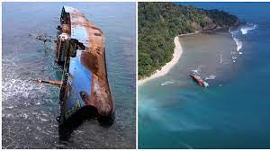

PANGANDARAN
Pantai Pangandaran merupakan pantai yang menghadap ke Samudra Hindia. Pasir putih dan pasir hitam, disertai dengan kondisi alamnya yang masih indah dan alami, ditambah lingkungannya yang bersih dan berombang tenang serta pemandangan matahari terbenam yang spektakuler.
KEINDAHAN PANGANDARAN
yang menjadi ikon wisata Pangandaran ini, selalu ramai dikunjungi baik oleh wisatawan lokal maupun mancanegara. Daya tarik utama dari Pantai Pangandaran adalah Pantai Barat, Pantai Timur dan kawasan Kampung Turis.
Pantai Barat memiliki ombak yang tidak begitu besar dan hamparan pasir yang luas membentang di sepanjang sisinya Oleh karena itu, Pantai Barat merupakan tempat favorit wisatawan untuk bermain air di tepian pantai, bermain boogie, menikmati keindahan sunset, menyewa sepeda/motor ATP, surfing atau hanya sekedar melepas lelah sembari meminum es dawegan (es kepala hijau).
Selain itu, wisata malam di Pantai Barat pun tak kalah menarik. Wisatawan dapat menyewa odong –odong (red- mobil gowes) untuk berkeliling kawasan wisata. Riuh tawa pecah ketika wisatawan harus mengayuh ekstra di jalan tanjakan. Tak hanya itu, kerlap-kerlip lampu odong-odong dan suara musik yang diputar pun semakin memeriahkan suasana wisata malam.
Berbeda dengan Pantai Barat, di Pantai Timur wisatawan dapat melihat sunrise ketika cuaca bersahabat dan bermain water sport seperti banana boat. Di kawasan ini, wisatawan juga dapat menemukan beragam tempat kuliner seafood dan olahan seafood goreng sebagai buah tangan untuk sanak keluarga atau sahabat di rumah. Tak hanya itu, di pagi hingga siang hari wisatawan dapat melihat rutinitas masyarakat nelayan yang mencari ikan dengan menggunakan jaring ered. Sebuah kearifan lokal yang juga menjadi daya tarik wisata tentunya.
Setelah berkeliling Pantai Barat dan Pantai Timur, kurang lengkap rasanya jika kalian tidak mampir ke area Kampung Turis. Disini terdapat caffe dan rumah makan dengan konsep alami yang dapat dilihat dari bangunannya yang menggunakan bambu dan bentuknya yang unik. Menu yang disajikan pun beragam dari menu Asia hingga Eropa. Kawasan ini ramai dikunjungi oleh wisatawan pada malam hari, khususnya malam Minggu. Kemeriahan malam pun semakin lengkap dengan iringan live music yang ditampilkan oleh masing-masing caffe.
PANGANDARAN BEACH
Pantai Barat memiliki ombak yang tidak begitu besar dan hamparan pasir yang luas membentang di sepanjang sisinya. Oleh karena itu, Pantai Barat merupakan tempat favorit wisatawan untuk bermain air di tepian pantai, bermain boogie, menikmati keindahan sunset, menyewa sepeda/motor ATP, surfing atau hanya sekedar melepas lelah sembari meminum es dawegan (es kepala hijau).
Pasir Putih

Liburan ke pantai Pangandaran rasanya tak lengkap jika tidak menginjak pantai pasir putih di hadapan deburan ombak yang tenang. Pasir putih Pangandaran terletak di bagian kawasan Taman Wisata Cagar Alam Pananjung. Jaraknya dari pasir hitam Pangandaran hanya disekat oleh teluk Pananjung. Harga tiket masuk pantai pasir putih masih satu tiket dengan pantai Pangandaran, untuk Orang Rp10.000, Sepeda Motor Rp20.000, Jeep/Sedan dan sejenisnya Rp60.000, Minibus kecil dan sejenisnya Rp95.000, Minibus Besar dan sejenisnya Rp135.000, Bus Kecil dan sejenisnya Rp205.000, Bus sedang dan sejenisnya Rp295.000 dan Bus besar dan sejenisnya Rp 515.000.
Bangkai kapal
menunjukkan keindahan salah satu pantai di Pangandaran. Keindahan pantai dengan air laut biru dan pasir putih dipercantik oleh sebuah kapal yang terdampar. Kapal itu merupakan kapal asing yang berhasil ditenggelamkan oleh mantan Menteri KKP, Susi Pudjiastuti.
penampakan bangkai kapal itu pun semakin mempercantik keindahan pantai dengan air laut biru dan pasir putih tersebut. Tepat beberapa mil dari pantai pasir putih, Kapal MV Viking masih terlihat bangkainya, bahkan dijadikan spot foto. anda bisa masuk mengelilingi kapal dengan menyewa perahu disana dengng ongkos Rp20.000 per orang.